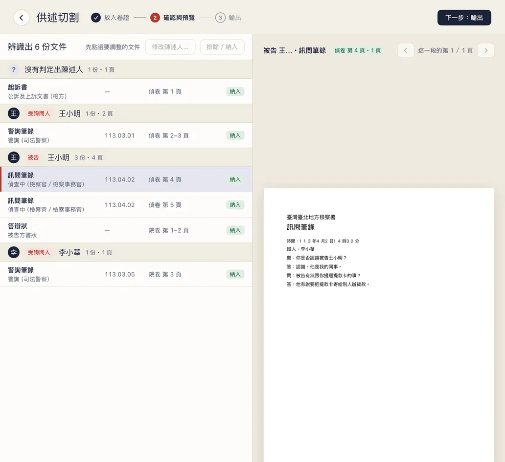
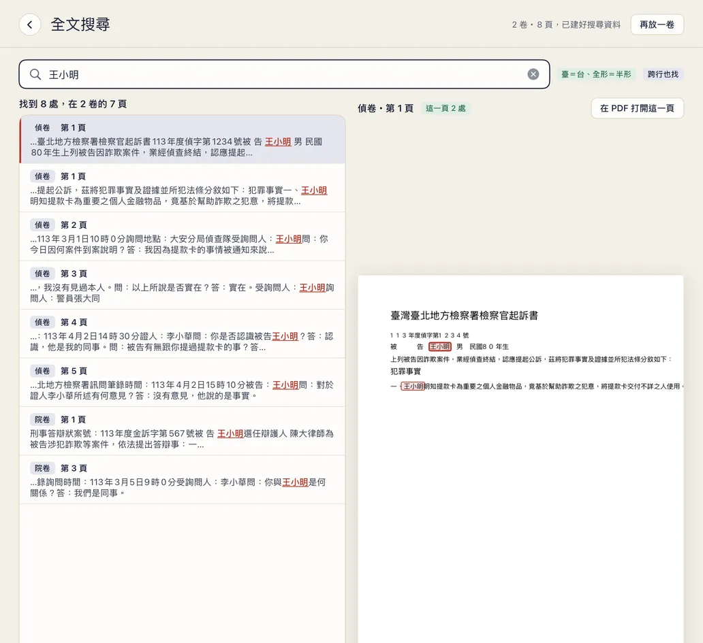
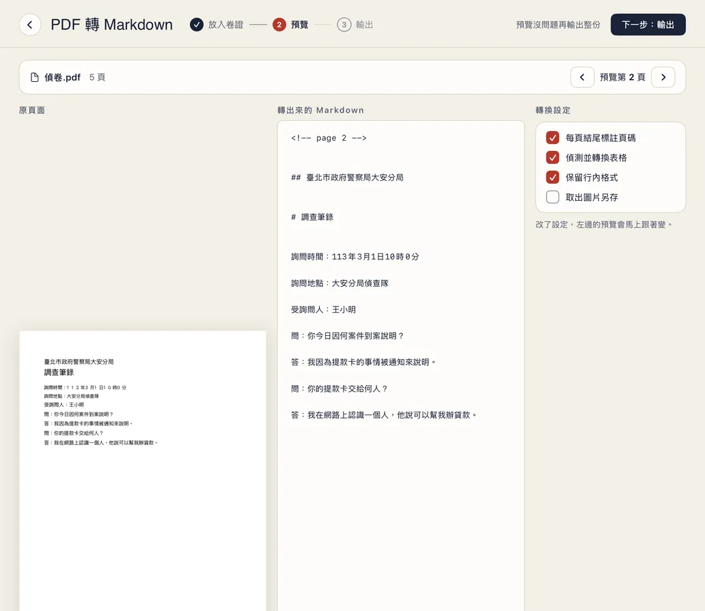
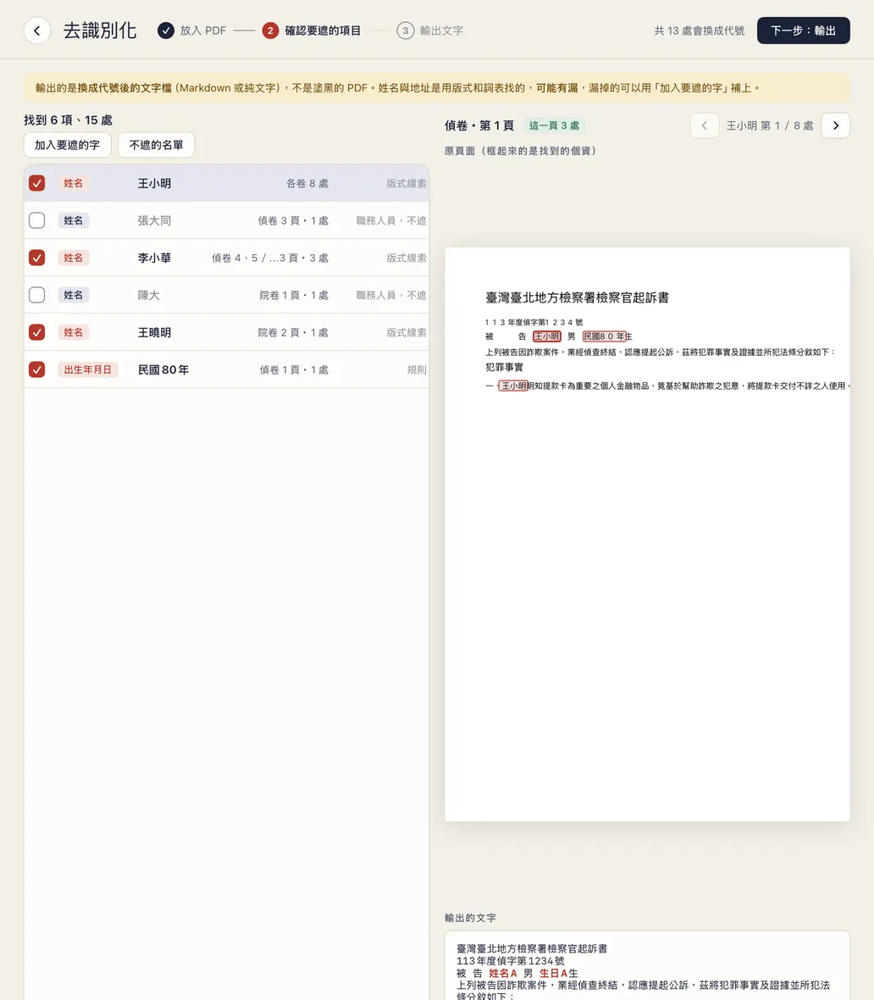
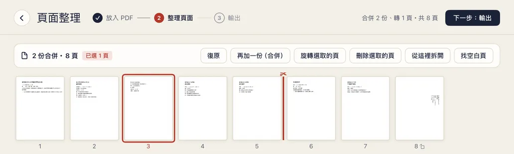

讀卷｜供述切割
左邊清單，右邊就是那一份筆錄
依陳述人分組的清單和筆錄頁面並排。點一列，右邊換成那一段的頁面；判斷錯的可以改陳述人，不要的排除。

iPad 版
跟 Mac 版一樣的十三個工具，放在 iPad 上。視窗夠寬時左邊有工具側欄，主要按鈕在右上角；清單和卷證頁面左右並排，邊看邊核對。
讀卷｜供述切割
依陳述人分組的清單和筆錄頁面並排。點一列，右邊換成那一段的頁面；判斷錯的可以改陳述人，不要的排除。

讀卷｜全文搜尋
幾卷一起找關鍵字。左邊每筆附卷名、頁碼與前後文，右邊那一頁框出位置。台與臺、全形與半形都找得到。

讀卷｜PDF 轉 Markdown
轉成文字之前先對照著看。改了轉換設定，中間的 Markdown 馬上跟著變，看過幾頁沒問題再輸出。

遞狀與交付｜去識別化
逐項確認找到的姓名、出生年月日等，右邊原頁面框出位置，下面是換成代號後的文字。用規則找，一定會有漏，輸出前請逐項確認。輸出的是文字，不是塗黑的 PDF。

頁面｜頁面整理
合併、拆分、旋轉、刪頁、找空白頁。拖曳縮圖換順序，改錯了可以復原。

| 對應裝置 | iPad（iPadOS 17 以上），四個方向都可以，支援分割畫面 |
|---|---|
| 放入檔案 | 按「選擇檔案…」從「檔案」App 選，或在「檔案」App 裡用審判工具箱打開 PDF；也可以用相機掃描 |
| 輸出位置 | 「檔案」App › 我的 iPad › 審判工具箱 |
| 文字辨識 | 使用裝置內建的功能，不用另外安裝 |
| 上架地區 | 台灣的 App Store |